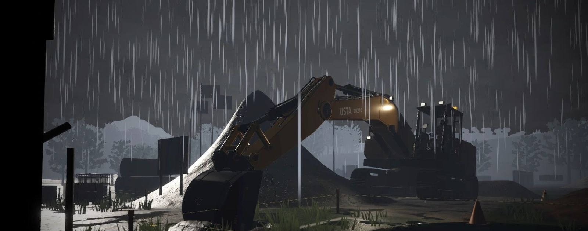

Harput Kışı
Zemheri geldi. Ateş sönmesin.Deep winter is here. Keep the fire alive.

Harput Kışı, 1942'nin dondurucu zemherisinde Elazığ'da geçen hikâyeli bir hayatta kalma oyunu. Soğuk, açlık ve tipiyle savaşırken Gülizar Nine'nin, Muhtar Ali'nin ve köylülerin hikâyesine ortak olursun.A story-driven survival game set in Elazığ during the freezing winter of 1942. Fight cold, hunger and blizzards while you become part of the stories of Grandma Gülizar, Headman Ali and the villagers.
Çıra yak, maşrapada kar erit, kızağını çek; Buzluk Mağarası'ndan donmuş dereye, köy meydanındaki Çayda Çıra halayına kadar.Light kindling, melt snow, pull your sled; from the Ice Cave to the frozen creek and the Çayda Çıra dance in the square.
Burada oyna.Play it right here.
Öne çıkanlar.The highlights.
ZemheriDeep winter
Soğuk, ıslanma, açlık ve susuzluk.Cold, wetness, hunger and thirst.
Tandır başıBy the tandoor
Ateşi yaşat, sıcak kal.Keep the fire alive.
Yerel hikâyeLocal story
Harput'un insanları ve efsaneleri.The people and legends of Harput.
Tipi ve kurtlarBlizzards & wolves
Gece dışarısı tehlikeli.Nights outside are dangerous.
Oyundan kareler.Straight from the game.
- GeliştiriciDeveloper
- Talha Yalçın
- MotorEngine
- Godot 4.7
- SürümVersion
- Prototip 0.9Prototype 0.9
- PlatformPlatforms
- PC, Steam
USTA
